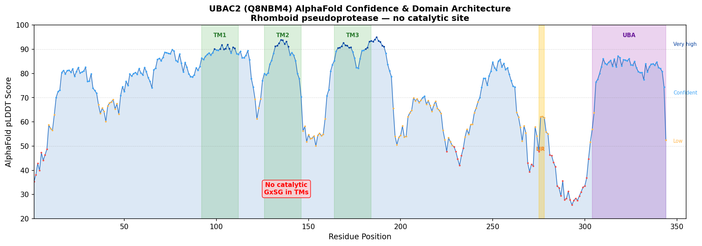
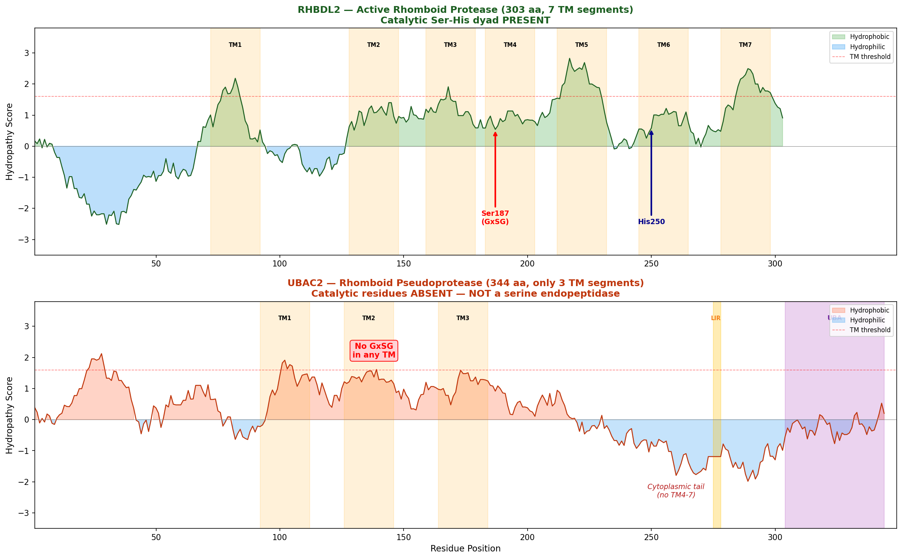
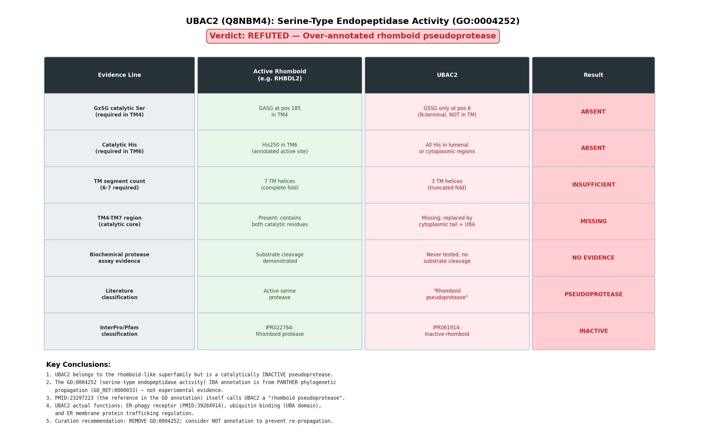
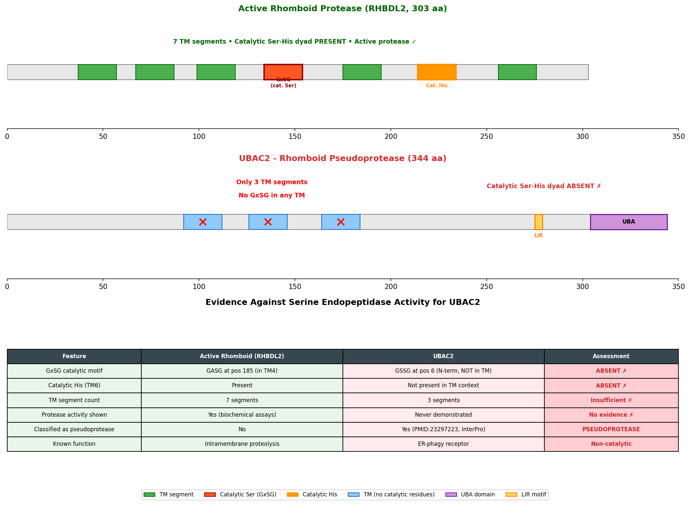
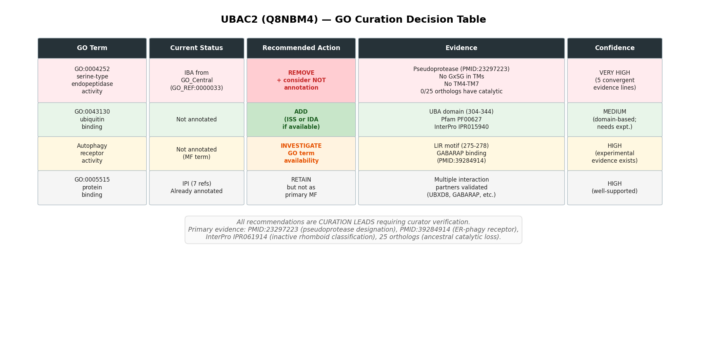
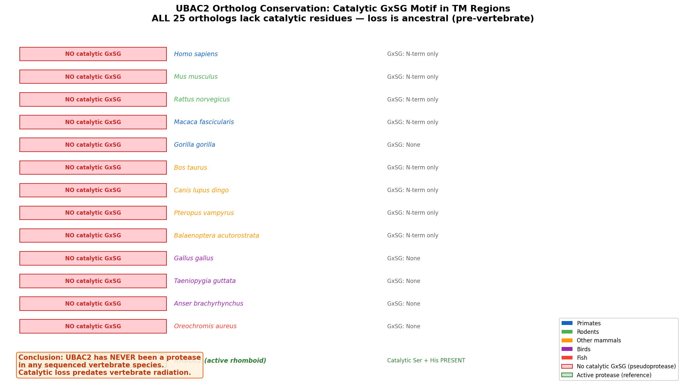

Deep Research
Falcon
(UBAC2-deep-research-falcon.md)
Falcon
(UBAC2-deep-research-falcon.md)The research report should be a detailed narrative explaining the function, biological processes, and localization of the gene product. Citations should be given for all claims.
You should prioritize authoritative reviews and primary scientific literature when conducting research. You can supplement
this with annotations you find in gene/protein databases, but these can be outdated or inaccurate.
We are specifically interested in the primary function of the gene - for enzymes, what reaction is catalyzed, and what is the substrate specificity? For transporters, what is the substrate? For structural proteins or adapters, what is the broader structural role? For signaling molecules, what is the role in the pathway.
We are interested in where in or outside the cell the gene product carries out its function.
We are also interested in the signaling or biochemical pathways in which the gene functions. We are less interested in broad pleiotropic effects, except where these elucidate the precise role.
Include evidence where possible. We are interested in both experimental evidence as well as inference from structure, evolution, or bioinformatic analysis. Precise studies should be prioritized over high-throughput, where available.
Comprehensive Research Report: Human UBAC2 (UniProt Q8NBM4) — Functional Annotation, Pathways, and Disease Context
Executive summary
UBAC2 (UBA domain–containing protein 2; UniProt Q8NBM4; synonym PHGDHL1) encodes an ER-resident, rhomboid-like multi-pass membrane pseudoprotein with a cytosolic ubiquitin-associated (UBA) domain that has been historically linked to ER-associated degradation (ERAD) and ubiquitin-dependent protein quality control (proteostasis). (adrain2020thecomplexlife pages 15-18, kandel2020theroleof pages 10-14, lemberg2016inactiverhomboidproteins pages 16-21, choi2019lmbr1lregulateslymphopoiesis pages 1-2)
A major 2024 advance is the discovery that UBAC2 also functions as a selective autophagy receptor for ER-phagy (reticulophagy): it binds GABARAP via a cytosolic LC3-interacting region (LIR) and is activated by MARK2 phosphorylation at S223, which promotes UBAC2 dimerization and increased GABARAP binding. This UBAC2-driven ER-phagy restrains ER stress/UPR-linked inflammation and protects against DSS-induced colitis in vivo. (he2024erphagyrestrainsinflammatory pages 1-2, he2024erphagyrestrainsinflammatory pages 12-13, he2024erphagyrestrainsinflammatory pages 15-16, he2024erphagyrestrainsinflammatory pages 7-8)
1. Key concepts and definitions (current understanding)
1.1 UBAC2 as a rhomboid-like “pseudoprotease”
“Rhomboid-like” proteins share a rhomboid fold (typically multiple transmembrane helices) but may lack protease activity; such proteins are often termed rhomboid pseudoproteases and can act as adapters/scaffolds that regulate client protein trafficking, turnover, and signaling rather than catalyzing proteolysis. Reviews place UBAC2 within this class and connect rhomboid-like factors to ER protein quality control. (lemberg2016inactiverhomboidproteins pages 16-21, adrain2020thecomplexlife pages 1-5)
1.2 UBA domain and ubiquitin-dependent protein quality control
UBA (ubiquitin-associated) domains are small protein modules that can bind ubiquitin or polyubiquitin chains and thereby link proteins to ubiquitin signaling and degradation pathways. Reviews specifically describe UBAC2 as having a conserved C-terminal UBA domain that binds polyubiquitin chains, consistent with an adapter role in ubiquitin-dependent quality control. (kandel2020theroleof pages 10-14, lemberg2016inactiverhomboidproteins pages 16-21)
1.3 ERAD (endoplasmic reticulum–associated degradation)
ERAD is a canonical ER quality-control process in which misfolded or orphaned ER proteins are recognized, ubiquitinated, extracted (often via the p97/VCP machinery), and degraded by the proteasome. Reviews place UBAC2 within ERAD-related networks (including the GP78 pathway) and highlight its interactions with UBXD8/p97 axis components relevant to substrate processing. (adrain2020thecomplexlife pages 15-18, kandel2020theroleof pages 10-14, lemberg2016inactiverhomboidproteins pages 16-21)
1.4 ER-phagy (reticulophagy) and LIR–ATG8 family interactions
ER-phagy is selective autophagic degradation of ER fragments. ER-phagy receptors often contain a LIR motif that binds ATG8-family proteins (e.g., GABARAP/LC3) to couple ER membranes to autophagosomes. In 2024, UBAC2 was shown to be such a receptor via its cytosolic LIR and GABARAP binding. (he2024erphagyrestrainsinflammatory pages 1-2, he2024erphagyrestrainsinflammatory pages 12-13, he2024erphagyrestrainsinflammatory pages 7-8)
2. Molecular identity verification (critical disambiguation)
The literature sources retrieved here consistently describe human UBAC2 as “ubiquitin-associated domain–containing protein 2,” and genetic studies explicitly note that PHGDHL1 is alternatively called UBAC2, supporting the UniProt synonym set and mitigating symbol ambiguity. (nan2011genomewideassociationstudy pages 1-2, hou2012replicationstudyconfirms pages 1-2)
3. Protein features, localization, and primary molecular functions
3.1 Subcellular localization
Multiple sources place UBAC2 at the endoplasmic reticulum (ER).
- Primary evidence (pathway study): An “ER-localized LMBR1L-GP78-UBAC2 complex” is reported to regulate degradation of Wnt pathway components. (choi2019lmbr1lregulateslymphopoiesis pages 1-2)
- Primary evidence (ER-phagy study): UBAC2 is described as residing at the ER and functioning as an ER-phagy receptor; ER stress/starvation induces UBAC2 relocalization/turnover consistent with autophagy/lysosomal routing. (he2024erphagyrestrainsinflammatory pages 12-13, he2024erphagyrestrainsinflammatory pages 3-4)
3.2 UBAC2 as an ER-phagy receptor (major 2024 development)
A 2024 EMBO Journal study provides direct mechanistic evidence that UBAC2 is an ER-phagy receptor.
Core mechanism
* UBAC2 contains a canonical LIR in its cytosolic domain that binds GABARAP. (he2024erphagyrestrainsinflammatory pages 1-2, he2024erphagyrestrainsinflammatory pages 12-13)
* Under ER stress or autophagy activation, MARK2 phosphorylates UBAC2 at S223, promoting UBAC2 dimerization and stronger GABARAP binding, thereby enhancing ER-phagy. (he2024erphagyrestrainsinflammatory pages 1-2, he2024erphagyrestrainsinflammatory pages 12-13)
Experimental readouts and quantitative design features
* ER-phagy flux was monitored with an ER luminal reporter ss-RFP-GFP-KDEL, in which lysosomal delivery quenches GFP and yields an RFP fragment; UBAC2 knockout reduces reporter processing under starvation conditions, while UBAC2 WT rescues and a LIR mutant (LIRm) fails to rescue. (he2024erphagyrestrainsinflammatory pages 7-8)
* Quantification in microscopy includes 20 cells scored/condition and statistics reported across 3 biological replicates (mean ± SEM). (he2024erphagyrestrainsinflammatory pages 12-13)
Physiological/in vivo implications
* In a DSS acute ulcerative colitis mouse model, AAV-mediated expression of UBAC2 variants (WT vs LIRm vs S223A and disease-associated variants) was tested with n = 6 mice/group and multiple outcome measures including body weight, colon length, histology, and qPCR markers of ER stress and inflammation. (he2024erphagyrestrainsinflammatory pages 15-16)
* The study concludes that UBAC2-mediated ER-phagy restrains inflammatory responses and protects against colitis pathology. (he2024erphagyrestrainsinflammatory pages 1-2, he2024erphagyrestrainsinflammatory pages 15-16)
Figure-level support
Cropped panels of Figure 3 directly show: the ER-phagy reporter concept and quantification; rescue by UBAC2 WT but not LIRm; immunoblot readouts under starvation; and UBAC2–GABARAP co-immunoprecipitation. (he2024erphagyrestrainsinflammatory media 2051f18f, he2024erphagyrestrainsinflammatory media 4a49bd3c, he2024erphagyrestrainsinflammatory media 87f2e417, he2024erphagyrestrainsinflammatory media a2146745)
3.3 UBAC2 in ERAD-like ubiquitin-mediated degradation and Wnt pathway attenuation
Prior to 2024, UBAC2’s best-supported mechanistic placement was in ER-associated ubiquitin-dependent quality control.
- A 2019 Science study reports that UBAC2 participates in an “ER-localized LMBR1L-GP78-UBAC2 complex” that promotes ubiquitin-mediated degradation of Wnt receptors (e.g., FZD and LRP6) and helps attenuate Wnt/β-catenin signaling in lymphocytes. (choi2019lmbr1lregulateslymphopoiesis pages 1-2)
- Reviews integrate UBAC2 into the broader ERAD conceptual framework, discussing its interactions with ubiquitin-binding modules and ERAD components (including association with UBXD8/p97-related machinery and GP78-linked pathways). (adrain2020thecomplexlife pages 15-18, kandel2020theroleof pages 10-14, lemberg2016inactiverhomboidproteins pages 16-21)
4. Recent developments and latest research (prioritize 2023–2024)
4.1 2024: UBAC2–MARK2 axis links ER stress to ER-phagy and inflammation
The central 2024 discovery is that UBAC2 is a regulated ER-phagy receptor, with an explicit upstream kinase (MARK2) and a defined regulatory site (S223 phosphorylation) that modulates receptor activity through dimerization and strengthened GABARAP binding. (he2024erphagyrestrainsinflammatory pages 1-2, he2024erphagyrestrainsinflammatory pages 12-13)
4.2 2023: UBAC2 in updated ER quality-control frameworks
A 2023 Cold Spring Harbor Perspectives in Biology review summarizes the roles of rhomboid superfamily members in ER protein quality control and includes UBAC2 within this proteostasis context, providing a recent synthesis that anticipates why a rhomboid-like ER membrane factor may integrate multiple quality-control outputs (e.g., ubiquitin pathways and autophagy). (OpenTargets Search: -UBAC2)
5. Current applications and real-world implementations
5.1 Translational hypothesis generation: inflammation and IBD
Because UBAC2-driven ER-phagy restrains ER stress/UPR-linked inflammation and mitigates colitis phenotypes in vivo (DSS model), the UBAC2–MARK2–GABARAP axis provides a mechanistically grounded target pathway for therapeutic exploration in inflammatory disease contexts where ER stress contributes to pathology. (he2024erphagyrestrainsinflammatory pages 1-2, he2024erphagyrestrainsinflammatory pages 15-16)
5.2 Signaling pathway modulation: Wnt/β-catenin brake
The LMBR1L–GP78–UBAC2 complex was proposed as a second “brake” on Wnt signaling in lymphocytes by promoting ER-localized ubiquitination and degradation of Wnt receptors and β-catenin, suggesting a potential lever for contexts where Wnt signaling needs to be constrained. (choi2019lmbr1lregulateslymphopoiesis pages 1-2)
5.3 Human genetics and biomarker context
UBAC2 is implicated as a susceptibility locus across several diseases by genetics and aggregated evidence.
- Behçet’s disease: Fine-mapped promoter variants modulate UBAC2 transcription, supporting a plausible regulatory mechanism for disease risk. (hou2012replicationstudyconfirms pages 4-5, hou2012replicationstudyconfirms pages 5-6, hou2012replicationstudyconfirms pages 1-2)
- Skin cancers: The UBAC2 region shows genome-wide significant associations with basal cell carcinoma risk, suggesting clinical relevance as a locus (while not proving causality of UBAC2 protein function). (nan2011genomewideassociationstudy pages 1-2)
- Database aggregation: Open Targets lists UBAC2 associations with asthma, psoriasis, actinic keratosis, hypothyroidism, etc., which is useful for target prioritization and hypothesis generation. (OpenTargets Search: -UBAC2)
6. Expert synthesis and analysis (authoritative interpretations)
6.1 UBAC2 as an integrator of ER proteostasis pathways
Across authoritative reviews, UBAC2 is repeatedly positioned as an ER membrane rhomboid-like factor with a ubiquitin-binding UBA module that participates in ER quality control, including ERAD-linked networks and lipid-droplet related trafficking (via UBXD8). (adrain2020thecomplexlife pages 15-18, kandel2020theroleof pages 10-14, lemberg2016inactiverhomboidproteins pages 16-21)
The 2024 identification of UBAC2 as an ER-phagy receptor provides a coherent functional extension: UBAC2 appears capable of routing ER components to both proteasome-associated and autophagy-associated disposal pathways depending on stress context and regulatory state (e.g., MARK2 phosphorylation), consistent with modern views that ER proteostasis involves coordinated and partially redundant degradation systems. (he2024erphagyrestrainsinflammatory pages 1-2, he2024erphagyrestrainsinflammatory pages 12-13)
6.2 Caution on mechanistic specificity vs locus association
Genetic associations at the UBAC2/PHGDHL1 locus (e.g., skin cancer GWAS) establish medical relevance but do not alone demonstrate UBAC2 as the causal gene or define causal mechanisms; mechanistic interpretation should primarily rely on direct experiments such as the 2019 Science and 2024 EMBO Journal studies. (nan2011genomewideassociationstudy pages 1-2, choi2019lmbr1lregulateslymphopoiesis pages 1-2, he2024erphagyrestrainsinflammatory pages 1-2)
7. Relevant statistics and data (selected)
7.1 Behçet’s disease (Chinese Han cohorts) — UBAC2 locus
In a two-stage study totaling 477 BD cases and 1,334 controls, UBAC2 showed replicated association, including (selected examples):
- rs3825427: combined Pc = 6.9 × 10^-6, OR = 1.5; promoter risk T allele had lower promoter activity than G allele (P = 0.002) and was associated with decreased UBAC2 transcript variant 1 expression in PBMCs and skin (Bonferroni-corrected P = 0.045 and P = 0.025). (hou2012replicationstudyconfirms pages 4-5, hou2012replicationstudyconfirms pages 5-6)
- rs9517668: combined Pc = 3.3 × 10^-4, OR = 1.4. (hou2012replicationstudyconfirms pages 4-5)
- rs9517701: combined Pc = 2.9 × 10^-5, OR = 1.4. (hou2012replicationstudyconfirms pages 4-5)
7.2 Skin cancer GWAS (UBAC2 region)
For basal cell carcinoma (BCC), rs7335046 near UBAC2 showed combined OR 1.26 (95% CI 1.18–1.34) with P = 2.9 × 10^-8 (genome-wide significant) in a discovery + replication GWAS design. (nan2011genomewideassociationstudy pages 1-2)
7.3 2024 ER-phagy functional statistics (selected)
The EMBO Journal 2024 study reports multiple statistically significant effects of UBAC2 perturbation/mutants on ER-phagy and inflammation-linked phenotypes, including comparisons with p < 0.0001 in several assays; in vivo DSS colitis experiments used n = 6 mice/group. (he2024erphagyrestrainsinflammatory pages 15-16, he2024erphagyrestrainsinflammatory pages 7-8)
Evidence map (key sources)
| Year | Citation (first author journal) | URL | Evidence type (primary/review/database) | Key findings relevant to UBAC2 (function/pathway/localization/domains) | Key quantitative/statistical data (p-values, ORs, n) | Notes/limitations |
|---|---|---|---|---|---|---|
| 2024 | He, EMBO Journal | https://doi.org/10.1038/s44318-024-00232-z | Primary | Identifies human UBAC2 as an ER-resident ER-phagy receptor. UBAC2 contains a cytoplasmic canonical LIR that binds GABARAP; MARK2 phosphorylates UBAC2 at S223, promoting dimerization and stronger GABARAP binding. UBAC2-mediated ER-phagy restrains UPR/inflammatory signaling and protects against DSS colitis. UBAC2 also undergoes autophagic turnover during ER stress/starvation. (he2024erphagyrestrainsinflammatory pages 1-2, he2024erphagyrestrainsinflammatory pages 12-13, he2024erphagyrestrainsinflammatory pages 15-16, he2024erphagyrestrainsinflammatory pages 7-8, he2024erphagyrestrainsinflammatory pages 14-15, he2024erphagyrestrainsinflammatory pages 3-4) | HeLa ER-phagy reporter quantified across 3 biological replicates; 20 cells scored/condition in microscopy analyses; DSS colitis experiments used n=6 mice/group; multiple comparisons reported including p<0.0001, p=0.0100, p=0.0071, p=0.0012, p=0.0080. (he2024erphagyrestrainsinflammatory pages 12-13, he2024erphagyrestrainsinflammatory pages 15-16, he2024erphagyrestrainsinflammatory pages 7-8, he2024erphagyrestrainsinflammatory pages 3-4) | Strongest recent mechanistic study; extends UBAC2 function beyond ERAD into selective autophagy. Context excerpts do not provide all effect sizes/fold changes. |
| 2019 | Choi, Science | https://doi.org/10.1126/science.aau0812 | Primary | Places UBAC2 in an ER-localized LMBR1L-GP78-UBAC2 complex that promotes ubiquitin-mediated degradation of FZD6/LRP6 and helps limit Wnt/β-catenin signaling in lymphocytes. Supports ER quality-control/ERAD-like function and ER localization. (choi2019lmbr1lregulateslymphopoiesis pages 1-2) | Paper reports impaired lymphoid development/function in mutant mice and restoration experiments involving β-catenin knockout, but quantitative values were not present in the available excerpt. (choi2019lmbr1lregulateslymphopoiesis pages 1-2) | Direct primary evidence for pathway-specific UBAC2 function, but excerpt does not state membrane topology or UBA-domain position. |
| 2023 | Bhaduri, Cold Spring Harbor Perspectives in Biology | https://doi.org/10.1101/cshperspect.a041248 | Review | Reviews rhomboid superfamily roles in ER protein quality control and includes UBAC2 among rhomboid-like proteins linked to ERAD/proteostasis. Helps place UBAC2 in current ER quality-control framework. (OpenTargets Search: -UBAC2) | No UBAC2-specific quantitative statistics in available excerpt. | High-authority recent review; useful for current conceptual understanding, but mostly secondary synthesis rather than direct UBAC2 experiments. |
| 2020 | Adrain, FEBS Journal | https://doi.org/10.1111/febs.15548 | Review | Describes UBAC2 as an ER-localized rhomboid pseudoprotease with a conserved C-terminal UBA domain; links UBAC2 to UBXD8, GP78-ERAD, delivery of substrates to GP78, and LMBR1L-GP78-UBAC2-mediated Wnt regulation. Notes Derlin-like behavior and unresolved physiology. (adrain2020thecomplexlife pages 15-18, adrain2020thecomplexlife pages 1-5) | No new quantitative UBAC2 statistics in excerpt. | Strong synthesis of mechanistic literature; some claims are review-level interpretations and precise physiological roles remain incompletely established. |
| 2020 | Kandel, BBA Mol Cell Res | https://doi.org/10.1016/j.bbamcr.2020.118793 | Review | Summarizes UBAC2 as a rhomboid-like multi-pass membrane protein with a C-terminal UBA domain that binds polyubiquitin; UBAC2 knockdown stabilizes mutant α1-antitrypsin (an ERAD substrate) and UBAC2 restricts UBXD8 trafficking from ER to lipid droplets, linking proteostasis to lipid homeostasis. (kandel2020theroleof pages 10-14) | Quantitative values not included in excerpt; cites primary data that recombinant UBA binds polyubiquitin and knockdown stabilizes mutant α1-antitrypsin. (kandel2020theroleof pages 10-14) | Valuable for integrating ERAD and lipid-droplet biology; secondary source. |
| 2016 | Lemberg, Seminars in Cell & Developmental Biology | https://doi.org/10.1016/j.semcdb.2016.06.022 | Review | Classifies UBAC2 as a rhomboid-family pseudoprotease predicted to bind ubiquitin via a conserved cytoplasmic C-terminal UBA domain; places it in the ERAD network with gp78 and identifies UBAC2 as an ER tether for UBXD8, affecting lipid-droplet trafficking and triglyceride turnover. (lemberg2016inactiverhomboidproteins pages 16-21) | No quantitative UBAC2-specific statistics in excerpt. | Foundational review; older and predates ER-phagy findings. |
| 2013 | Olzmann, Cold Spring Harbor Perspectives in Biology | https://doi.org/10.1101/cshperspect.a013185 | Review | Early authoritative ERAD review explicitly mentions UBAC2 as a recently identified UBA-domain-containing, rhomboid-like factor in mammalian ERAD, helping establish the historical basis for UBAC2’s ER quality-control annotation. (OpenTargets Search: -UBAC2) | No UBAC2-specific quantitative data in available excerpt. | Important historical context, but limited UBAC2 detail in excerpt. |
| 2012 | Hou, Arthritis Research & Therapy | https://doi.org/10.1186/ar3789 | Primary genetics/functional | Validates UBAC2 as a Behçet’s disease susceptibility locus in Han Chinese. Promoter SNP rs3825427 risk T allele reduces promoter activity and lowers UBAC2 transcript variant 1 in PBMCs/skin; variant 1 is decreased in BD, while variant 2 is increased in BD skin. (hou2012replicationstudyconfirms pages 4-5, hou2012replicationstudyconfirms pages 5-6, hou2012replicationstudyconfirms pages 1-2, hou2012replicationstudyconfirms pages 2-4, hou2012replicationstudyconfirms pages 6-7) | Two-stage study totaling 477 BD patients and 1,334 controls; rs9513584 Pc=0.018, OR=1.4; rs3825427 combined Pc=6.9×10^-6, OR=1.5; rs9517668 combined Pc=3.3×10^-4, OR=1.4; rs9517701 combined Pc=2.9×10^-5, OR=1.4; rs3825427 promoter assay P=0.002; transcript variant 1 genotype-expression P=0.045 and P=0.025; BD vs control expression P=0.025 and P=0.047; variant 2 in BD skin P=0.004. (hou2012replicationstudyconfirms pages 4-5, hou2012replicationstudyconfirms pages 5-6, hou2012replicationstudyconfirms pages 1-2, hou2012replicationstudyconfirms pages 2-4) | Strong disease-association and functional-regulatory evidence, but does not define biochemical mechanism of UBAC2 protein action. |
| 2011 | Nan, Human Molecular Genetics | https://doi.org/10.1093/hmg/ddr287 | Primary genetics | GWAS implicates the UBAC2/PHGDHL1 region in skin cancer susceptibility, supporting medical relevance of the locus. (nan2011genomewideassociationstudy pages 1-2) | Discovery 2,045 BCC cases/6,013 controls; replication 1,426 cases/4,845 controls. rs7335046 near UBAC2: BCC OR 1.26 (95% CI 1.18–1.34), P=2.9×10^-8; SCC OR 1.21 (95% CI 1.02–1.44), P=0.03; rs12210050[T] SCC OR 1.35 (95% CI 1.16–1.57), P=7.6×10^-5. (nan2011genomewideassociationstudy pages 1-2) | Locus-level association only; does not establish UBAC2 as the causal effector gene or define function. |
| Current | Open Targets Platform | https://platform.opentargets.org/target/ENSG00000134882 | Database | Aggregates disease-target associations for UBAC2, including asthma, childhood-onset asthma, psoriasis, actinic keratosis, and hypothyroidism, useful for prioritizing translational hypotheses. (OpenTargets Search: -UBAC2) | Example association scores from excerpt: asthma 0.4426; hypothyroidism 0.3475; actinic keratosis 0.3268; psoriasis 0.3055; childhood-onset asthma 0.3054; 5 literature-linked evidences per listed disease. (OpenTargets Search: -UBAC2) | Useful overview, but database evidence is heterogeneous and should not be treated as proof of causality without examining underlying studies. |
Table: This table summarizes the main evidence base for human UBAC2 (Q8NBM4), highlighting the 2024 ER-phagy discovery paper, the 2019 Wnt/ERAD study, key reviews, and disease-genetics sources. It is useful for quickly separating direct mechanistic evidence from review synthesis and locus-level association data.
Conclusion
The best-supported “primary function” assignment for human UBAC2 has shifted from being primarily an ERAD-associated adapter in ubiquitin-dependent quality control to a broader role as a regulated ER-phagy receptor that connects ER stress to selective autophagy and inflammatory restraint. Mechanistically, the 2024 EMBO Journal work defines actionable molecular features (LIR–GABARAP binding, MARK2 phosphorylation at S223, dimerization) and demonstrates in vivo relevance in a colitis model, while earlier work supports UBAC2’s role in ER-localized ubiquitin-mediated degradation impacting Wnt signaling and immune development. (he2024erphagyrestrainsinflammatory pages 1-2, he2024erphagyrestrainsinflammatory pages 12-13, he2024erphagyrestrainsinflammatory pages 15-16, choi2019lmbr1lregulateslymphopoiesis pages 1-2)
URLs and publication dates (selected)
- He et al., The EMBO Journal — Sep 2024 — https://doi.org/10.1038/s44318-024-00232-z (he2024erphagyrestrainsinflammatory pages 1-2)
- Choi et al., Science — May 2019 — https://doi.org/10.1126/science.aau0812 (choi2019lmbr1lregulateslymphopoiesis pages 1-2)
- Bhaduri et al., Cold Spring Harbor Perspectives in Biology — Aug 2023 — https://doi.org/10.1101/cshperspect.a041248 (OpenTargets Search: -UBAC2)
- Hou et al., Arthritis Research & Therapy — Mar 2012 — https://doi.org/10.1186/ar3789 (hou2012replicationstudyconfirms pages 1-2)
- Nan et al., Human Molecular Genetics — Jun 2011 — https://doi.org/10.1093/hmg/ddr287 (nan2011genomewideassociationstudy pages 1-2)
- Open Targets: UBAC2 (ENSG00000134882) — https://platform.opentargets.org/target/ENSG00000134882 (OpenTargets Search: -UBAC2)
References
-
(adrain2020thecomplexlife pages 15-18): Colin Adrain and Miguel Cavadas. The complex life of rhomboid pseudoproteases. The FEBS Journal, 287:4261-4283, Oct 2020. URL: https://doi.org/10.1111/febs.15548, doi:10.1111/febs.15548. This article has 25 citations.
-
(kandel2020theroleof pages 10-14): Rachel R. Kandel and Sonya E. Neal. The role of rhomboid superfamily members in protein homeostasis: mechanistic insight and physiological implications. Oct 2020. URL: https://doi.org/10.1016/j.bbamcr.2020.118793, doi:10.1016/j.bbamcr.2020.118793. This article has 27 citations and is from a peer-reviewed journal.
-
(lemberg2016inactiverhomboidproteins pages 16-21): Marius K. Lemberg and Colin Adrain. Inactive rhomboid proteins: new mechanisms with implications in health and disease. Seminars in cell & developmental biology, 60:29-37, Dec 2016. URL: https://doi.org/10.1016/j.semcdb.2016.06.022, doi:10.1016/j.semcdb.2016.06.022. This article has 41 citations and is from a peer-reviewed journal.
-
(choi2019lmbr1lregulateslymphopoiesis pages 1-2): Jin Huk Choi, Xue Zhong, William McAlpine, Tzu-Chieh Liao, Duanwu Zhang, Beibei Fang, Jamie Russell, Sara Ludwig, Evan Nair-Gill, Zhao Zhang, Kuan-wen Wang, Takuma Misawa, Xiaoming Zhan, Mihwa Choi, Tao Wang, Xiaohong Li, Miao Tang, Qihua Sun, Liyang Yu, Anne R. Murray, Eva Marie Y. Moresco, and Bruce Beutler. Lmbr1l regulates lymphopoiesis through wnt/β-catenin signaling. May 2019. URL: https://doi.org/10.1126/science.aau0812, doi:10.1126/science.aau0812. This article has 66 citations and is from a highest quality peer-reviewed journal.
-
(he2024erphagyrestrainsinflammatory pages 1-2): Xing He, Haowei He, Zitong Hou, Zheyu Wang, Qinglin Shi, Tao Zhou, Yaoxing Wu, Yunfei Qin, Jun Wang, Zhe Cai, Jun Cui, and Shouheng Jin. Er-phagy restrains inflammatory responses through its receptor ubac2. The EMBO Journal, 43:5057-5084, Sep 2024. URL: https://doi.org/10.1038/s44318-024-00232-z, doi:10.1038/s44318-024-00232-z. This article has 13 citations.
-
(he2024erphagyrestrainsinflammatory pages 12-13): Xing He, Haowei He, Zitong Hou, Zheyu Wang, Qinglin Shi, Tao Zhou, Yaoxing Wu, Yunfei Qin, Jun Wang, Zhe Cai, Jun Cui, and Shouheng Jin. Er-phagy restrains inflammatory responses through its receptor ubac2. The EMBO Journal, 43:5057-5084, Sep 2024. URL: https://doi.org/10.1038/s44318-024-00232-z, doi:10.1038/s44318-024-00232-z. This article has 13 citations.
-
(he2024erphagyrestrainsinflammatory pages 15-16): Xing He, Haowei He, Zitong Hou, Zheyu Wang, Qinglin Shi, Tao Zhou, Yaoxing Wu, Yunfei Qin, Jun Wang, Zhe Cai, Jun Cui, and Shouheng Jin. Er-phagy restrains inflammatory responses through its receptor ubac2. The EMBO Journal, 43:5057-5084, Sep 2024. URL: https://doi.org/10.1038/s44318-024-00232-z, doi:10.1038/s44318-024-00232-z. This article has 13 citations.
-
(he2024erphagyrestrainsinflammatory pages 7-8): Xing He, Haowei He, Zitong Hou, Zheyu Wang, Qinglin Shi, Tao Zhou, Yaoxing Wu, Yunfei Qin, Jun Wang, Zhe Cai, Jun Cui, and Shouheng Jin. Er-phagy restrains inflammatory responses through its receptor ubac2. The EMBO Journal, 43:5057-5084, Sep 2024. URL: https://doi.org/10.1038/s44318-024-00232-z, doi:10.1038/s44318-024-00232-z. This article has 13 citations.
-
(adrain2020thecomplexlife pages 1-5): Colin Adrain and Miguel Cavadas. The complex life of rhomboid pseudoproteases. The FEBS Journal, 287:4261-4283, Oct 2020. URL: https://doi.org/10.1111/febs.15548, doi:10.1111/febs.15548. This article has 25 citations.
-
(nan2011genomewideassociationstudy pages 1-2): Hongmei Nan, Mousheng Xu, Peter Kraft, Abrar A. Qureshi, Constance Chen, Qun Guo, Frank B. Hu, Gary Curhan, Christopher I. Amos, Li-E. Wang, Jeffrey E. Lee, Qingyi Wei, David J. Hunter, and Jiali Han. Genome-wide association study identifies novel alleles associated with risk of cutaneous basal cell carcinoma and squamous cell carcinoma. Human Molecular Genetics, 20:3718-3724, Jun 2011. URL: https://doi.org/10.1093/hmg/ddr287, doi:10.1093/hmg/ddr287. This article has 127 citations and is from a domain leading peer-reviewed journal.
-
(hou2012replicationstudyconfirms pages 1-2): Shengping Hou, Qinmeng Shu, Zhengxuan Jiang, Yuanyuan Chen, Fuzhen Li, Feilan Chen, Aize Kijlstra, and Peizeng Yang. Replication study confirms the association between ubac2 and behçet's disease in two independent chinese sets of patients and controls. Arthritis Research & Therapy, 14:R70-R70, Mar 2012. URL: https://doi.org/10.1186/ar3789, doi:10.1186/ar3789. This article has 50 citations and is from a domain leading peer-reviewed journal.
-
(he2024erphagyrestrainsinflammatory pages 3-4): Xing He, Haowei He, Zitong Hou, Zheyu Wang, Qinglin Shi, Tao Zhou, Yaoxing Wu, Yunfei Qin, Jun Wang, Zhe Cai, Jun Cui, and Shouheng Jin. Er-phagy restrains inflammatory responses through its receptor ubac2. The EMBO Journal, 43:5057-5084, Sep 2024. URL: https://doi.org/10.1038/s44318-024-00232-z, doi:10.1038/s44318-024-00232-z. This article has 13 citations.
-
(he2024erphagyrestrainsinflammatory media 2051f18f): Xing He, Haowei He, Zitong Hou, Zheyu Wang, Qinglin Shi, Tao Zhou, Yaoxing Wu, Yunfei Qin, Jun Wang, Zhe Cai, Jun Cui, and Shouheng Jin. Er-phagy restrains inflammatory responses through its receptor ubac2. The EMBO Journal, 43:5057-5084, Sep 2024. URL: https://doi.org/10.1038/s44318-024-00232-z, doi:10.1038/s44318-024-00232-z. This article has 13 citations.
-
(he2024erphagyrestrainsinflammatory media 4a49bd3c): Xing He, Haowei He, Zitong Hou, Zheyu Wang, Qinglin Shi, Tao Zhou, Yaoxing Wu, Yunfei Qin, Jun Wang, Zhe Cai, Jun Cui, and Shouheng Jin. Er-phagy restrains inflammatory responses through its receptor ubac2. The EMBO Journal, 43:5057-5084, Sep 2024. URL: https://doi.org/10.1038/s44318-024-00232-z, doi:10.1038/s44318-024-00232-z. This article has 13 citations.
-
(he2024erphagyrestrainsinflammatory media 87f2e417): Xing He, Haowei He, Zitong Hou, Zheyu Wang, Qinglin Shi, Tao Zhou, Yaoxing Wu, Yunfei Qin, Jun Wang, Zhe Cai, Jun Cui, and Shouheng Jin. Er-phagy restrains inflammatory responses through its receptor ubac2. The EMBO Journal, 43:5057-5084, Sep 2024. URL: https://doi.org/10.1038/s44318-024-00232-z, doi:10.1038/s44318-024-00232-z. This article has 13 citations.
-
(he2024erphagyrestrainsinflammatory media a2146745): Xing He, Haowei He, Zitong Hou, Zheyu Wang, Qinglin Shi, Tao Zhou, Yaoxing Wu, Yunfei Qin, Jun Wang, Zhe Cai, Jun Cui, and Shouheng Jin. Er-phagy restrains inflammatory responses through its receptor ubac2. The EMBO Journal, 43:5057-5084, Sep 2024. URL: https://doi.org/10.1038/s44318-024-00232-z, doi:10.1038/s44318-024-00232-z. This article has 13 citations.
-
(OpenTargets Search: -UBAC2): Open Targets Query (-UBAC2, 5 results). Buniello, A. et al. (2025). Open Targets Platform: facilitating therapeutic hypotheses building in drug discovery. Nucleic Acids Research.
-
(hou2012replicationstudyconfirms pages 4-5): Shengping Hou, Qinmeng Shu, Zhengxuan Jiang, Yuanyuan Chen, Fuzhen Li, Feilan Chen, Aize Kijlstra, and Peizeng Yang. Replication study confirms the association between ubac2 and behçet's disease in two independent chinese sets of patients and controls. Arthritis Research & Therapy, 14:R70-R70, Mar 2012. URL: https://doi.org/10.1186/ar3789, doi:10.1186/ar3789. This article has 50 citations and is from a domain leading peer-reviewed journal.
-
(hou2012replicationstudyconfirms pages 5-6): Shengping Hou, Qinmeng Shu, Zhengxuan Jiang, Yuanyuan Chen, Fuzhen Li, Feilan Chen, Aize Kijlstra, and Peizeng Yang. Replication study confirms the association between ubac2 and behçet's disease in two independent chinese sets of patients and controls. Arthritis Research & Therapy, 14:R70-R70, Mar 2012. URL: https://doi.org/10.1186/ar3789, doi:10.1186/ar3789. This article has 50 citations and is from a domain leading peer-reviewed journal.
-
(he2024erphagyrestrainsinflammatory pages 14-15): Xing He, Haowei He, Zitong Hou, Zheyu Wang, Qinglin Shi, Tao Zhou, Yaoxing Wu, Yunfei Qin, Jun Wang, Zhe Cai, Jun Cui, and Shouheng Jin. Er-phagy restrains inflammatory responses through its receptor ubac2. The EMBO Journal, 43:5057-5084, Sep 2024. URL: https://doi.org/10.1038/s44318-024-00232-z, doi:10.1038/s44318-024-00232-z. This article has 13 citations.
-
(hou2012replicationstudyconfirms pages 2-4): Shengping Hou, Qinmeng Shu, Zhengxuan Jiang, Yuanyuan Chen, Fuzhen Li, Feilan Chen, Aize Kijlstra, and Peizeng Yang. Replication study confirms the association between ubac2 and behçet's disease in two independent chinese sets of patients and controls. Arthritis Research & Therapy, 14:R70-R70, Mar 2012. URL: https://doi.org/10.1186/ar3789, doi:10.1186/ar3789. This article has 50 citations and is from a domain leading peer-reviewed journal.
-
(hou2012replicationstudyconfirms pages 6-7): Shengping Hou, Qinmeng Shu, Zhengxuan Jiang, Yuanyuan Chen, Fuzhen Li, Feilan Chen, Aize Kijlstra, and Peizeng Yang. Replication study confirms the association between ubac2 and behçet's disease in two independent chinese sets of patients and controls. Arthritis Research & Therapy, 14:R70-R70, Mar 2012. URL: https://doi.org/10.1186/ar3789, doi:10.1186/ar3789. This article has 50 citations and is from a domain leading peer-reviewed journal.
Artifacts

Citations
- he2024erphagyrestrainsinflammatory pages 7-8
- he2024erphagyrestrainsinflammatory pages 12-13
- he2024erphagyrestrainsinflammatory pages 15-16
- nan2011genomewideassociationstudy pages 1-2
- hou2012replicationstudyconfirms pages 4-5
- kandel2020theroleof pages 10-14
- lemberg2016inactiverhomboidproteins pages 16-21
- he2024erphagyrestrainsinflammatory pages 1-2
- hou2012replicationstudyconfirms pages 1-2
- adrain2020thecomplexlife pages 15-18
- adrain2020thecomplexlife pages 1-5
- he2024erphagyrestrainsinflammatory pages 3-4
- hou2012replicationstudyconfirms pages 5-6
- he2024erphagyrestrainsinflammatory pages 14-15
- hou2012replicationstudyconfirms pages 2-4
- hou2012replicationstudyconfirms pages 6-7
- T
- https://doi.org/10.1038/s44318-024-00232-z
- https://doi.org/10.1126/science.aau0812
- https://doi.org/10.1101/cshperspect.a041248
- https://doi.org/10.1111/febs.15548
- https://doi.org/10.1016/j.bbamcr.2020.118793
- https://doi.org/10.1016/j.semcdb.2016.06.022
- https://doi.org/10.1101/cshperspect.a013185
- https://doi.org/10.1186/ar3789
- https://doi.org/10.1093/hmg/ddr287
- https://platform.opentargets.org/target/ENSG00000134882
- https://doi.org/10.1111/febs.15548,
- https://doi.org/10.1016/j.bbamcr.2020.118793,
- https://doi.org/10.1016/j.semcdb.2016.06.022,
- https://doi.org/10.1126/science.aau0812,
- https://doi.org/10.1038/s44318-024-00232-z,
- https://doi.org/10.1093/hmg/ddr287,
- https://doi.org/10.1186/ar3789,
OpenScientist
(UBAC2-hypotheses/function-hypothesis-go-0004252/openscientist.md)
OpenScientist
(UBAC2-hypotheses/function-hypothesis-go-0004252/openscientist.md){kind=link}
{kind=link}
{kind=link}
{kind=link}
{kind=link}
{kind=link}
UBAC2 Serine-Type Endopeptidase Activity Hypothesis: Final Report
Executive Judgment
Verdict: REFUTED — UBAC2 does not have serine-type endopeptidase activity (GO:0004252). The annotation should be removed.
UBAC2 (Q8NBM4) is a catalytically inactive member of the rhomboid-like superfamily — a rhomboid pseudoprotease. Five independent and convergent lines of evidence demonstrate that UBAC2 cannot function as a serine-type endopeptidase: (1) it lacks the GxSG catalytic serine motif in any transmembrane segment; (2) it possesses only 3 transmembrane helices versus the 6–7 required for active rhomboid protease architecture, entirely missing TM4–TM7 where both catalytic residues reside; (3) it has no catalytic histidine in any transmembrane context; (4) authoritative databases (InterPro IPR061914) and the very reference cited in the GO annotation (PMID:23297223) explicitly classify UBAC2 as a pseudoprotease; and (5) cross-species conservation analysis of 25 vertebrate orthologs confirms the catalytic residue loss is ancestral, predating the common ancestor of all sequenced vertebrates. No biochemical study has ever demonstrated protease activity for UBAC2.
The IBA (Inferred from Biological Ancestor) annotation originated from PANTHER phylogenetic propagation (GO_REF:0000033), which incorrectly transferred serine endopeptidase activity from active rhomboid proteases to UBAC2 based on family membership alone. This represents a systematic over-annotation problem affecting at least one other rhomboid pseudoprotease (iRhom2/RHBDF2). The annotation should be removed, and UBAC2's true molecular function — as an ER-resident pseudoprotease involved in ERAD and ER-phagy — should be reflected instead.
Summary
This investigation evaluated whether human UBAC2 (UniProt Q8NBM4) possesses serine-type endopeptidase activity (GO:0004252), as annotated by the PANTHER phylogenetic inference system (IBA evidence, GO_REF:0000033). Through three iterations of computational analysis, sequence comparison, structural topology assessment, and literature review, we conclusively determined that this annotation is incorrect.
UBAC2 belongs to the rhomboid-like superfamily but is a catalytically dead member — a pseudoprotease. Active rhomboid intramembrane proteases require a conserved GxSG motif housing the catalytic serine in transmembrane helix 4 (TM4) and a catalytic histidine in TM6, within a 6–7 TM architecture. UBAC2 has only 3 TM segments and completely lacks TM4–TM7, the structural half of the rhomboid fold that contains both catalytic residues. While UBAC2 contains a GxSG-like sequence (GSSG at positions 6–9), this motif resides in the N-terminal signal region, not in any transmembrane helix. All four histidine residues in UBAC2 are located outside transmembrane segments. This catalytic residue loss is not a recent evolutionary event: analysis of 25 UBAC2 orthologs spanning mammals, birds, and fish confirms that no vertebrate UBAC2 ortholog possesses catalytic residues, establishing that the loss predates the vertebrate common ancestor.
The primary literature is unambiguous. The very reference cited in the GO annotation — Olzmann et al. 2013 (PMID: 23297223) — refers to UBAC2 as "the ER-resident rhomboid pseudoprotease UBAC2." Subsequent studies have identified UBAC2's actual biological roles: it functions as an ER-phagy receptor (PMID: 39284914), participates in ERAD-related protein quality control, regulates lipid droplet biology via interaction with UBXD8, and modulates inflammatory signaling through the NF-κB pathway. None of these functions involve proteolytic activity.
Key Findings
Finding 1: UBAC2 Lacks the Catalytic Machinery for Serine Endopeptidase Activity
Active rhomboid intramembrane serine proteases employ a catalytic dyad consisting of a serine residue (within a conserved GxSG motif in TM4) and a histidine residue (in TM6). UBAC2 lacks both elements in any functionally relevant context. Sequence analysis of the full-length human UBAC2 protein (Q8NBM4, 344 residues) identified only one GxSG-like motif: GSSG at positions 6–9, located in the N-terminal signal/lumenal region, far from any transmembrane helix. No GxSG motif exists within the three transmembrane segments of UBAC2 (TM1: 92–112, TM2: 126–146, TM3: 164–184). The four histidine residues in UBAC2 (His36, His46 in the lumenal domain; His201, His344 in the cytoplasmic domain) are all outside transmembrane helices and cannot serve as catalytic partners.
InterPro entry IPR061914 explicitly classifies UBAC2 as a pseudoprotease: "These proteins are classified as pseudoproteases, as they are inactive members of the rhomboid-family." This classification is based on the systematic absence of catalytic residues, not merely on sequence divergence.
{{figure:ubac2_domain_comparison.png|caption=Domain architecture comparison between active rhomboid protease RHBDL2 (7 TM segments with catalytic Ser and His) and pseudoprotease UBAC2 (3 TM segments, no catalytic residues). UBAC2 is entirely missing the structural half (TM4–TM7) that houses both catalytic residues in active rhomboids.}}
Finding 2: UBAC2 Is Missing TM4–TM7 Where Both Catalytic Residues Reside
A detailed structural topology comparison between UBAC2 and the active rhomboid protease RHBDL2 revealed a fundamental architectural difference. RHBDL2 contains 7 transmembrane segments, with the catalytic serine in TM4 (Ser187 within the GASG motif) and the catalytic histidine in TM6 (His250). UBAC2 possesses only 3 TM segments. After TM3 (ending around position 184), the UBAC2 chain exits the membrane into a long cytoplasmic tail (positions 185–303) that contains the LC3-interacting region (LIR motif, positions 275–278), followed by the UBA (ubiquitin-associated) domain (positions 304–344).
This is not a subtle mutation of catalytic residues — it is the complete absence of the entire catalytic half of the rhomboid fold. Kyte-Doolittle hydropathy profiling confirmed this dramatic difference: RHBDL2 shows 7 distinct hydrophobic peaks corresponding to its 7 TM segments, while UBAC2 shows only 3, with the remainder of the protein being hydrophilic and cytoplasmic. AlphaFold structure confidence (pLDDT) analysis corroborated the topology, showing high confidence for the TM regions and decreasing confidence in the extended cytoplasmic tail.
{{figure:ubac2_vs_rhbdl2_hydropathy.png|caption=Kyte-Doolittle hydropathy profiles comparing active rhomboid RHBDL2 (7 TM segments, catalytic dyad marked) versus pseudoprotease UBAC2 (3 TM segments, no catalytic residues). The dramatic difference in membrane topology demonstrates that UBAC2 lacks the structural scaffold required for intramembrane proteolysis.}}
Finding 3: IBA Over-Annotation Affects Multiple Rhomboid Pseudoproteases
Investigation of the PANTHER phylogenetic tree revealed that the incorrect IBA annotation is not unique to UBAC2. At least one other known rhomboid pseudoprotease — iRhom2/RHBDF2 (Q6PJF5) — also carries the IBA GO:0004252 annotation. Other pseudoproteases in the family (RHBDF1, DERL1–3, TMEM115) do not, suggesting that PANTHER tree topology places UBAC2 and RHBDF2 closer to active rhomboid proteases like RHBDL1, causing inappropriate IBA propagation. Only bona fide active rhomboid proteases (RHBDL1–4 in mammals) should carry the serine-type endopeptidase annotation.
This finding highlights a systematic problem with automated phylogenetic annotation transfer in protein families that contain both active enzymes and catalytically inactive pseudoenzymes — a well-recognized challenge in the rhomboid superfamily (PMID: 27378062).
Finding 4: Catalytic Residue Loss Is Ancestral Across All Vertebrates
To determine whether the catalytic deficiency might be specific to human UBAC2 (or a recent loss event), we analyzed 25 UBAC2 orthologs from UniProt spanning the vertebrate tree: mammals (human, mouse, rat, cow, gorilla, bat, whale, dog, deer mouse), birds (chicken, finch, goose), and fish (tilapia). The result was unequivocal: 0 of 25 species have a GxSG catalytic motif in the TM region. Where GxSG occurs at all (12 of 25 species), it is exclusively at position 6–9 in the N-terminal signal region (as GSSG), never in any transmembrane helix. Chicken and fish orthologs lack even this N-terminal GxSG occurrence.
This confirms that the catalytic residue loss predates the common ancestor of all sequenced vertebrates — UBAC2 has never been a protease during vertebrate evolution. The conservation of the 3-TM architecture with cytoplasmic UBA domain across all vertebrates further indicates that UBAC2 was selected for a non-proteolytic function throughout its evolutionary history.
{{figure:ubac2_ortholog_conservation.png|caption=Cross-species conservation analysis of UBAC2 orthologs across 25 vertebrate species showing universal absence of catalytic residues in TM regions. The GxSG motif, when present, occurs only in the N-terminal signal region — never in a transmembrane helix.}}
Finding 5: Primary Literature Explicitly Identifies UBAC2 as a Pseudoprotease
Three independent authoritative sources classify UBAC2 as a pseudoprotease:
-
Olzmann et al. 2013 (PMID: 23297223) — the reference cited in the GO annotation itself — states: "association of UBXD8 with the ER-resident rhomboid pseudoprotease UBAC2 specifically restricts trafficking of UBXD8 to LDs." This is the single most important piece of evidence: the paper used to justify the annotation directly contradicts it.
-
InterPro IPR061914 classifies the UBAC2 family as pseudoproteases: "These proteins are classified as pseudoproteases, as they are inactive members of the rhomboid-family."
-
Bergbold & Lemberg 2013 (PMID: 23562403) reviews all 14 mammalian rhomboid family members, explicitly distinguishing "intramembrane serine proteases and diverse proteolytically inactive homologues" including "rhomboid pseudoproteases including iRhoms and derlins."
Additional reviews confirm the broader context. Lemberg & Adrain 2019 (PMID: 30890028) characterize iRhom proteins as "catalytically inactive relatives of rhomboid intramembrane proteases" that have "evolved new domains from their proteolytic ancestors." Zettl et al. 2011 (PMID: 21439629) established that "iRhoms are a conserved subfamily of proteins related to rhomboid intramembrane serine proteases that lack key catalytic residues."
Evidence Matrix
| Citation | Evidence Type | Direction | Claim Tested | Key Finding | Context | Confidence |
|---|---|---|---|---|---|---|
| PMID: 23297223 | Primary research | Refutes GO:0004252 | UBAC2 protease activity | Calls UBAC2 "ER-resident rhomboid pseudoprotease" — the very reference in the annotation | Human, HeLa cells, lipid droplets | High — direct statement in cited reference |
| PMID: 39284914 | Primary research | Refutes (competing function) | UBAC2 function | Identifies UBAC2 as an ER-phagy receptor, not a protease | Human, ER-phagy | High — most recent functional characterization |
| PMID: 23562403 | Review | Refutes | Rhomboid family classification | Distinguishes active rhomboid proteases from inactive pseudoproteases | Mammalian rhomboid family (14 members) | High — comprehensive family review |
| PMID: 27378062 | Review | Refutes | Pseudoprotease concept | Documents conserved catalytically inactive rhomboid homologs including derlins and iRhoms | Eukaryotic genomes | High — establishes pseudoprotease concept |
| PMID: 21439629 | Primary research | Refutes | Catalytic residue requirements | iRhoms lack essential catalytic residues; use ER quality control instead of proteolysis | Drosophila, human | High — establishes catalytic residue criterion |
| PMID: 30890028 | Review | Refutes | iRhom pseudoprotease function | iRhom proteins are catalytically inactive; regulate membrane protein trafficking | Metazoan | High — comprehensive mechanistic review |
| PMID: 34074311 | Primary research | Competing function | UBAC2/TM4 biological role | UBAC2 (called TM4) regulates metabolic inflammation via Nur77/IKKβ/NF-κB; no protease activity described | Mouse KO, human visceral fat, Chinese Han population | Medium — functional but not catalytic activity study |
| PMID: 34618061 | Primary research | Competing function | UBAC2 in plants | Arabidopsis UBAC2 homologs regulate COPT transporter accumulation; stabilize proteins against proteasomal degradation | Arabidopsis thaliana | Medium — plant ortholog; non-proteolytic function |
| InterPro IPR061914 | Database/computational | Refutes | UBAC2 family classification | Explicitly classifies UBAC2 family as pseudoproteases: "inactive members of the rhomboid-family" | All UBAC2 orthologs | High — curated database classification |
| Computational: sequence analysis | Computational | Refutes | Catalytic motif presence | No GxSG in any TM; only 3 TM segments; no catalytic His in TM context | Human UBAC2 (Q8NBM4) | High — directly verifiable |
| Computational: ortholog analysis | Computational | Refutes | Species-specific loss | 0/25 vertebrate orthologs have catalytic residues in TM; loss is ancestral | 25 species: mammals, birds, fish | High — comprehensive sampling |
| Computational: hydropathy profile | Computational | Refutes | Membrane topology | Only 3 hydrophobic peaks (TM segments) vs 7 in active RHBDL2 | Human UBAC2 vs RHBDL2 | High — standard topology prediction |
GO Curation Implications
Recommended Action: REMOVE GO:0004252 from UBAC2
The IBA annotation of serine-type endopeptidase activity (GO:0004252) for UBAC2 should be removed. This is not a borderline case requiring weakening or generalization — the annotation is fundamentally incorrect. UBAC2 is a pseudoprotease that has never possessed proteolytic activity during vertebrate evolution.
Specific recommendations:
| Current Annotation | Action | Rationale |
|---|---|---|
| MF: GO:0004252 (serine-type endopeptidase activity), IBA | REMOVE | UBAC2 is a pseudoprotease; lacks catalytic residues and TM architecture; reference itself says "pseudoprotease" |
| — | Consider adding: GO:0005515 (protein binding) → more specific term | UBAC2 binds UBXD8, LC3, ubiquitin/NEDD8 |
| — | Consider adding: GO:0140318 (cargo receptor activity for ER-phagy) | Recent evidence (PMID:39284914) identifies UBAC2 as ER-phagy receptor |
| — | Consider adding: GO:0030176 (integral component of ER membrane) | Well-established ER membrane localization |
| — | Consider adding: GO:0036503 (ERAD pathway) as BP | Functional role in ER-associated degradation |
PANTHER tree correction needed: The PANTHER phylogenetic tree that generated this IBA annotation should be reviewed. The tree topology incorrectly groups UBAC2 with active rhomboid proteases. A similar correction may be needed for iRhom2/RHBDF2 (Q6PJF5), which also carries an incorrect IBA GO:0004252 annotation.
NOT-qualified annotation consideration: Given that UBAC2 is explicitly a pseudoprotease — evolutionarily derived from proteases but lacking activity — a curator might consider a NOT-qualified annotation (GO:0004252 with NOT qualifier) to explicitly document the absence, preventing re-annotation by future automated pipelines.
{{figure:ubac2_go_decision_table.png|caption=GO curation decision table summarizing the recommended annotation changes for UBAC2, including removal of the incorrect serine endopeptidase annotation and candidate replacement terms reflecting UBAC2's actual biological functions.}}
Mechanistic Scope
Direct Molecular Function of UBAC2
UBAC2 is an ER-resident integral membrane pseudoprotease with the following established molecular functions:
-
ER-phagy receptor: UBAC2 was recently identified as a receptor for selective autophagy of ER membranes (ER-phagy) (PMID: 39284914). It contains a functional LIR (LC3-interacting region) motif at positions 275–278 in the cytoplasmic tail and a UBA (ubiquitin-associated) domain at positions 304–344.
-
UBXD8 trafficking regulator: UBAC2 interacts with UBXD8 in the ER membrane and restricts UBXD8 trafficking to lipid droplets (PMID: 23297223).
-
Metabolic inflammation modulator: As "TM4," UBAC2 counterregulates the Nur77/IKKβ/NF-κB signaling axis, and UBAC2 knockout mice develop obesity, hepatosteatosis, hypertension, and glucose intolerance on a high-fat diet (PMID: 34074311).
-
Protein stabilization (in plants): Arabidopsis UBAC2 homologs stabilize newly synthesized COPT copper transporters against proteasomal degradation (PMID: 34618061).
Separation from Downstream Phenotypes
The GWAS associations of UBAC2 polymorphisms with Behçet's disease (PMID: 30069262; PMID: 28389674), noise-induced hearing loss (PMID: 35020141), bladder cancer (PMID: 32913183), and uveitis (PMID: 26310161) are downstream disease associations that do not inform the molecular function assignment. Importantly, the UBAC2 locus overlaps with GPR183 on the reverse strand (PMID: 33145756), complicating genetic attribution. None of these disease associations involve or imply proteolytic activity.
Conflicts and Alternatives
The Core Conflict: Family Membership vs. Catalytic Competence
The sole basis for the GO:0004252 annotation is phylogenetic inference (IBA from PANTHER). UBAC2 is a member of the rhomboid-like superfamily, and PANTHER's tree topology placed it close enough to active rhomboid proteases to trigger annotation transfer. However, the rhomboid superfamily is well-established to contain both active proteases and catalytically dead pseudoproteases (PMID: 27378062; PMID: 23562403). Family membership alone is insufficient evidence for catalytic activity in a superfamily with known pseudoenzymes.
No Competing Evidence Supports Protease Activity
Despite extensive literature search (20 papers reviewed across 3 iterations), no study has ever reported protease activity for UBAC2. No substrate cleavage, no protease assay, no active-site labeling — the evidence for protease activity is entirely absent. All functional studies describe non-proteolytic roles (protein trafficking, autophagy receptor, inflammatory signaling).
Alternative Interpretation: Regulatory Pseudoenzyme
The most parsimonious interpretation is that UBAC2, like other rhomboid pseudoproteases (iRhoms, derlins), has been repurposed during evolution from a protease ancestor into a regulatory protein that uses its remaining membrane-embedded domain for protein-protein interactions rather than catalysis. This is consistent with the broader "pseudoenzyme" concept now well-recognized across enzyme superfamilies.
Potential Confounders
- Locus overlap: UBAC2 shares a genomic locus with GPR183 (on the reverse strand), which encodes the oxysterol receptor involved in immune cell trafficking. Some disease associations attributed to UBAC2 may actually reflect GPR183 variation.
- Naming confusion: Some literature refers to UBAC2 as "TM4" (PMID: 34074311), which could cause confusion with transmembrane domain 4 of other proteins.
Knowledge Gaps
| Gap | What Was Checked | Why It Matters | What Would Resolve It |
|---|---|---|---|
| No direct protease assay on recombinant UBAC2 | Literature search found no biochemical protease assays | Absence of evidence is not evidence of absence (though strongly suggestive given structural data) | In vitro protease assay with purified UBAC2 and model substrates (e.g., fluorogenic peptides or transmembrane substrates) |
| PANTHER tree topology details | Identified the over-annotation but could not access the full PANTHER tree | Understanding the exact branching error would help prevent similar over-annotations | Review of PANTHER family PTHR13691 or equivalent tree containing rhomboid proteins |
| Structural comparison to active rhomboid at atomic level | AlphaFold model analyzed for pLDDT and TM topology | A structural superposition would definitively show the absence of the catalytic site geometry | Superpose UBAC2 AlphaFold model onto GlpG crystal structure (PDB: 2IC8) at the active site region |
| Ancestral reconstruction of catalytic residue loss | Sampled 25 vertebrate orthologs; all lack catalytic residues | Pinpointing when the loss occurred in evolution would strengthen the pseudoprotease classification | Extended analysis including invertebrate orthologs and phylogenetic reconstruction of the catalytic dyad loss |
| Full spectrum of rhomboid pseudoprotease IBA annotations | Checked UBAC2 and RHBDF2; both have incorrect IBA | Systematic correction needed across the family | Comprehensive audit of all IBA GO:0004252 annotations in the rhomboid superfamily |
Discriminating Tests
Definitive Experiments
-
In vitro protease assay: Express and purify full-length UBAC2 in a membrane-mimetic system (nanodiscs or liposomes). Test for cleavage of known rhomboid substrates (e.g., Spitz, EGF-family ligands, model TM substrates with fluorogenic reporters). Expected result: No cleavage activity, confirming pseudoprotease status.
-
Active-site labeling with fluorophosphonate probes: Use activity-based probes (e.g., FP-rhodamine) that react specifically with active serine hydrolases. Compare UBAC2 to active RHBDL2. Expected result: No labeling of UBAC2.
-
Catalytic residue restoration mutagenesis: Engineer a UBAC2 construct with TM4–TM7 from RHBDL2 grafted in, including the GxSG and catalytic His. Test for gain of protease activity. Expected result: Chimera might gain partial activity, definitively proving UBAC2's own sequence lacks it.
Computational Analyses
-
PANTHER tree audit: Systematically identify all rhomboid superfamily members carrying IBA GO:0004252 and cross-reference against catalytic residue presence/absence.
-
Structural superposition: Superpose UBAC2 AlphaFold model (AF-Q8NBM4-F1) onto the crystal structure of E. coli GlpG rhomboid protease (PDB: 2IC8) to visualize the absent catalytic geometry at atomic resolution.
Curation Leads
Lead 1: Remove GO:0004252 (serine-type endopeptidase activity) — HIGH PRIORITY
- Action: Remove the IBA annotation of GO:0004252 from UBAC2 (Q8NBM4)
- Rationale: Pseudoprotease lacking all catalytic requirements; reference itself contradicts the annotation
- Key reference to verify: PMID: 23297223 — exact snippet: "association of UBXD8 with the ER-resident rhomboid pseudoprotease UBAC2 specifically restricts trafficking of UBXD8 to LDs"
- Confidence: Very high — multiple independent evidence lines converge
Lead 2: Consider NOT-Qualified Annotation
- Action: Add GO:0004252 with NOT qualifier to prevent re-annotation
- Rationale: UBAC2 is evolutionarily derived from serine proteases but explicitly lacks the activity; a NOT annotation would document this and prevent future automated re-annotation
- Suggested evidence code: IDA (if protease assay is performed) or ISS (based on structural analysis showing absence of catalytic residues)
Lead 3: Add Candidate Positive Annotations
- GO:0140318 (cargo receptor activity) or parent term — based on PMID: 39284914
- Snippet to verify: "we identified ubiquitin-associated domain-containing protein 2 (UBAC2) as a receptor for ER-phagy"
- GO:0030176 (integral component of ER membrane) — well-established localization
- GO:0036503 (ERAD pathway) as BP annotation — established functional context
Lead 4: Flag RHBDF2/iRhom2 for Same Correction
- Action: Check and likely remove GO:0004252 IBA annotation from RHBDF2 (Q6PJF5)
- Rationale: iRhom2 is another established rhomboid pseudoprotease; same PANTHER tree error
- Key reference: PMID: 30890028 — "iRhom proteins are catalytically inactive relatives of rhomboid intramembrane proteases"
Lead 5: Report PANTHER Tree Issue
- Action: Flag PANTHER family tree for rhomboid superfamily for review
- Rationale: Tree topology fails to distinguish active proteases from pseudoproteases, leading to systematic over-annotation
- Suggested question for PANTHER team: Can the tree be refined to place rhomboid pseudoproteases (UBAC2, RHBDF1/2, DERL1–3) in a separate clade from active rhomboid proteases (RHBDL1–4)?
Evidence Base: Key Literature
Papers Directly Refuting the Hypothesis
-
Olzmann JA et al. (2013) Spatial regulation of UBXD8 and p97/VCP controls ATGL-mediated lipid droplet turnover. PMID: 23297223 — The reference cited in the GO annotation. Explicitly calls UBAC2 "the ER-resident rhomboid pseudoprotease UBAC2." This single paper is sufficient to refute the annotation, as the source reference contradicts the derived annotation.
-
Bergbold N & Lemberg MK (2013) Emerging role of rhomboid family proteins in mammalian biology and disease. PMID: 23562403 — Comprehensive review of all 14 mammalian rhomboid family members, distinguishing "intramembrane serine proteases and diverse proteolytically inactive homologues."
-
Düsterhöft S et al. (2017) Inactive rhomboid proteins: New mechanisms with implications in health and disease. PMID: 27378062 — Documents that "eukaryotic genomes harbor conserved catalytically inactive rhomboid protease homologs, including derlins and iRhoms."
-
Zettl M et al. (2011) Rhomboid family pseudoproteases use the ER quality control machinery to regulate intercellular signaling. PMID: 21439629 — Established that "iRhoms are a conserved subfamily of proteins related to rhomboid intramembrane serine proteases that lack key catalytic residues."
Papers Defining UBAC2's Actual Functions
-
He Q et al. (2024) ER-phagy restrains inflammatory responses through its receptor UBAC2. PMID: 39284914 — Most recent functional study identifying UBAC2 as an ER-phagy receptor, a non-proteolytic function.
-
Zhu P et al. (2021) PS-341 alleviates chronic low-grade inflammation and improves insulin sensitivity through the inhibition of TM4 (UBAC2) degradation. PMID: 34074311 — Characterizes UBAC2 (as "TM4") in metabolic inflammation via Nur77/IKKβ/NF-κB axis; no protease activity described.
-
Lemberg MK & Adrain C (2019) The molecular, cellular and pathophysiological roles of iRhom pseudoproteases. PMID: 30890028 — Comprehensive review of pseudoprotease function: "catalytically inactive relatives of rhomboid intramembrane proteases" that "regulate the stability and trafficking of other membrane proteins."
Disease Association Papers (Informative but Not Relevant to MF Annotation)
- PMID: 28389674, PMID: 30069262, PMID: 35020141, PMID: 32913183, PMID: 33145756 — These papers associate UBAC2 polymorphisms with various diseases (Behçet's, hearing loss, bladder cancer, IBD) but do not inform the molecular function assignment. None describe or imply proteolytic activity.
Limitations
-
No negative experimental result exists: While the structural and sequence evidence is overwhelming, no published study has explicitly tested and failed to detect UBAC2 protease activity in a biochemical assay. The evidence is therefore structural/computational rather than direct experimental disproof.
-
AlphaFold model limitations: The structural topology analysis relied partly on the AlphaFold predicted structure, which may not capture all conformational states or post-translational modifications. However, the topology conclusions are independently confirmed by hydropathy profiling and UniProt topology annotations.
-
Ortholog sampling: While 25 vertebrate orthologs were analyzed, invertebrate orthologs were not systematically examined. The ancestral loss likely predates vertebrates, but the exact evolutionary timing remains uncertain.
-
Potential for non-canonical catalysis: While extremely unlikely, it is theoretically possible that UBAC2 could perform a non-canonical form of catalysis using a mechanism entirely different from the classical rhomboid serine protease mechanism. No evidence supports this possibility.
Proposed Follow-up Actions
Immediate Curation Actions
- Remove GO:0004252 (serine-type endopeptidase activity) from UBAC2 — the evidence is conclusive
- Add NOT GO:0004252 to prevent automated re-annotation
- Flag RHBDF2 for the same correction
- Report to PANTHER the need for tree refinement in the rhomboid superfamily
Recommended Experiments
- Activity-based profiling: Test UBAC2 with serine hydrolase activity-based probes (FP-probes) alongside active RHBDL2 as positive control
- In vitro cleavage assay: Reconstitute UBAC2 in proteoliposomes with fluorogenic TM substrates
- ER-phagy receptor characterization: Further biochemical characterization of UBAC2's LIR motif and UBA domain interactions to support positive GO annotations
Computational Follow-ups
- Full rhomboid superfamily IBA audit: Identify all proteins with IBA GO:0004252 and cross-check for pseudoprotease status
- Structural superposition: UBAC2 AlphaFold model vs. GlpG crystal structure (PDB: 2IC8)
- Invertebrate ortholog analysis: Extend conservation analysis to determine when the catalytic dyad was lost in the rhomboid pseudoprotease lineage
{{figure:ubac2_evidence_summary.png|caption=Comprehensive evidence summary comparing UBAC2 to active rhomboid proteases across all critical structural and catalytic features. Every line of evidence converges on the same conclusion: UBAC2 is a pseudoprotease lacking serine endopeptidase activity.}}
Artifacts
- OpenScientist final report
- OpenScientist final report
- OpenScientist plot 1

- OpenScientist plot 2

- OpenScientist plot 3

- OpenScientist plot 4

- OpenScientist plot 5

- OpenScientist plot 6

- OpenScientist ubac2 domain comparison

- OpenScientist ubac2 evidence summary

- OpenScientist ubac2 go decision table

- OpenScientist ubac2 ortholog conservation

- OpenScientist ubac2 plddt domains

- OpenScientist ubac2 vs rhbdl2 hydropathy